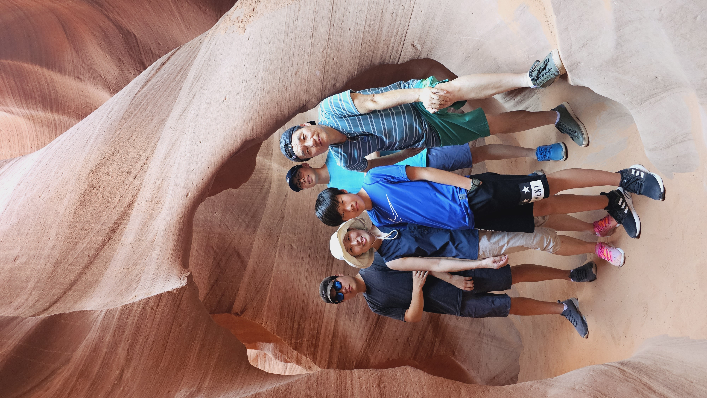

Hello, this is Daniel Jang writing (or should I say typing?) to you!
I am currently a Computer Science undergraduate at the University of Waterloo, where I am part of the Co-op program.
My primary objective is to specialize my studies in cybersecurity because I believe it is a critical field as technology
allows information to be increasingly accessible and effecient.
While security is my passion, I am open to other aspects of computer science, especially software development and data science.
In fact, I have learned numerous programming languages, including but not limited to Python, Java, C, HTML/CSS, and JavaScript.
Whenever I have free time, you will likely find me at the gym, practicing my cello, playing video games,
or working on a personal coding project. Beyond that, I love to spend quality time with my family and friends
(and then talk to them some more! I sacrifice too much sleep to socialize 😁).
Feel free to reach out to me through the Contact page if you have any questions or just want to say hi!

